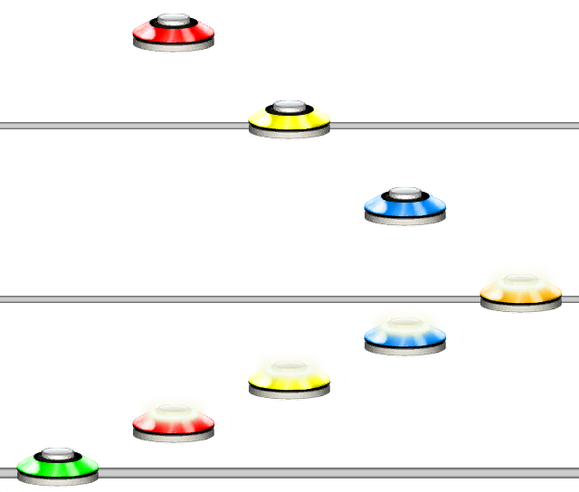

Quantization
Aliases
QUANTIZATION, STEP, QUANT Q
Overview
The Quantization function will set the quantization, or step of the parser at this point. A value of 16 means 1/16th step.
This function is functionally identical to using | for quantization. Ex. |16| means the same as QUANTIZATION(16).
For a shorter way to write basic quantizations, see the Shorthand Quantization function.
Arguments
| Name | Type | Description |
|---|---|---|
| Value | integer | The value of the quantization as 1/value. |
| SnapMode (optional) | string | Defines the SnapMode for this quantization. Default is FORWARDS. |
Allowed snapmodes are NONE, FORWARDS, BACKWARDS. See Examples 3a, 3b and 3c for the differences.
Example 1
1234QUANT(8)5432
Sets the quantization to 1/8th after the blue note.
Example 2
1234|8|5432
Yields the same result as Example 1, but using the | bar notation.
Snap Mode
The second parameter of Quantization function defines what way quantization snapping should be handled.
It has three modes:
| Mode | Behaviour | Bar Notation |
|---|---|---|
FORWARDS |
Snaps to the next closest multiple unless it is already on that multiple. | |16| - No Extra character |
BACKWARDS |
Snaps to the closest position after the previous note. | |16:| - Colon |
NONE |
No snapping, it just sets the quantization and. This can create offset notes. | |16!| - Exclamation Mark |
QUANT(16, NONE) is the same as |16!|.
Example 3a
123|12|123
FORWARDS snapping.
Example 3b
123|12:|123
BACKWARDS snapping.
Example 3c
123|12!|123
NONE snapping.